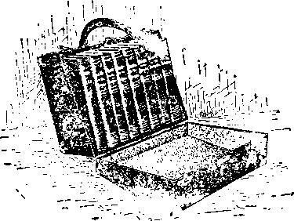

Upon the earth distress of nations with perplexity: the sea and the waves (the restless, discontented) roaring; men’s hearts failing them for fear and for looking te the things coming upon the earth (society); for the powers of the heavens (ecclesiasticism) shall be shaken. . . When ye see these things begin to come to paas, their know that the Kiugdom of God is at hand. Look up, lift up your heads, rejoice, for your redemption draweth nigh.—Matt. 24:33; Mark 13:29; Luke 21:25-31
THIS JOURNAL AND ITS SACRED MISSION
THIS Journal is one of the prime factors or instruments in the system of Bible instruction, or “Seminary Extension”, now being presented in all parts of the civilized world by the Watch Tower Bible & Tract Society, chartered A. D. 1884, “For the Promotion of Christian Knowledge”, It not only serves as a class room where Bible students may meet in the study of the divine Word but also as a channel of communication through which they may be reached with announcements of the Society’s conventions and of the coming of its traveling representatives, styled “Pilgrims”, and refreshed with reports of its conventions.
Our “Berean Lessons” are topical rehearsals or reviews of our Society’s published Studies most entertainingly arranged, and very helpful to all who would merit the only honorary degree which the Society accords, viz., Verbi Dei Minister (V. D. M.), which translated into English is Minister of God’s Word. Our treatment of the International Sunday School Lessons is specially for the older Bible students and teachers. By some this feature is considered indispensable.
This journal stands firmly for the defense of the only true foundation of the Christian’s hope now being so generally repudiated —redemption through the precious blood of “the man Christ Jesus, who gave himself a ransom [a corresponding price, a substitute] for all”. (1 Peter 1:19; 1 Timothy 2:6 Building up on this sure foundation the gold, silver and precious stones (1 Corinthians 3: 1115, 2 Peter 1’5-11) of the Word of God, its further mission is to “make all see what is the fellowship of the mystery which. . .has been hid in God, ... to the intent that now might be made known by the church the manifold wisdom of God”—“which in other ages was not made known unto the sons of men as it is now revealed”.—Ephesians 3 : 5-9,10.
It stands free from all parties, sects and creeds of mon. v h?.e it seeks more and more to bring its every utterance into fullest subjection to the will of God in Christ, as expressed in (he holy Scriptures. It is thus free to declare boldly whatsoever the Lord hath spoken—according to the divine wisdom granted unto us to understand his utterances. Its attitude is not dogmatic, but confident for we know whereof we affirm, treading with implicit faith upon the sure promises of God. It is held as a trust, to be used only in his service; hence our decisions relative to what maj and what may not appear in its columns must be according to our judgment of his good pleasure, the teaching of his Word, for the upbuild.ng of his people in grace and knowledge. And we not only invite but urge ou readers to prove all its utterances by the infallible Word to which reference is constantly made to facilitate such testing.
TO US THE SCRIPTURES CLEARLY TEACH
That the church is “the temple of the living God”, peculiarly “his workmanship” ; that its construction has been in progress throughout the gospel .ago—ever sr.re Christ became the world's Redeemer and the Chief Corner Stone of his temple, through which, when finished, God's ble. .iiv: .shall come “to all people”, and they find access to him.—1 Corinthians 3:16, 17; Ephesians 2:20-22; Genesis 28 : 1 1 ; Galatians 3 : 29.
That meantime the (-hireling, shaping, and polishing of consecrated believers in Christ’s atonement for sin, progresses; and when the last of these “living stones”, “elect and precious,” sluul have been made ready, the great Master Workman will bring all together in the Li >t resuru < tion: and the temple shall be filleo with his glory, and be the meeting place between God and men throughout the Millennium.—Revelation 15:5 s.
That the basis of hope, for the church a”d the world, lies in the fact that “Jesus Christ, by the grace of God, tasted death for every man.” “a ransom for all,” and will be “the true light which lighteth every man that cometh into the world”, “in due time”.— Hebrews 2:9; John 1 : 9 ; 1 Timothy 2:5, G.
That the hope of the church is that she may be like her Lord, “see him as he is,” be ‘partaker of the divine nature / and share his glory as bis joint-heir.—1 John 3.2; John 17:24; Romans 8:17; 2 Peter 1:4.
That the present mission of the church is the perfecting of the saints for the future work of service; to develop in herself every grace ; to be God’s vvitne s to the world; and to prepare to be kings and priests in the next age.—Ephesians 4 :12 ; Matthew 24:14 ; Revelation 1:6; 20 : 6.
That the hope for the world lies in the blessings of knowledge and opportunity to be brought to all by Christ’s Millennial kingdom, the restitution of all that was lost in Adam, to all the willing and obedient, at the hands of their Redeemer and his glorified church, when all the wilfully wicked will be destroyed.—Acts 3: 19-23; Isaiah 35.
Published ay
WATCH TOWER.Bl BLE TRACT SOCIETY
18 CONCORD STREET O 0 BROOKLYN, NY. U SA
Foreign Offices: British: 34 Craven Terrace, Lancaster Gate, London W. 2; Canadian: 270 Dundas St., W., Toronto, Ontario Australasian: 495 Collins St., Melbourne, Australia; South African : 6 Lelie St., Cape Town, South Africa.
Please Address the Society in Every Case.
YEARLY SUBSCRIPTION PRICE; United States, $1.00; Cannda and Miscellaneous Foreign, $1.50. Great Britain, Al s'irvlasta, and SOUTH Africa, 8s. American remittance* should be made by Express or Postal Money Orders, or by Bank Draft. Canadiau, British, South African, and Australasian remittances should be made to branth offices only. Remittances from scattered foreign, territory may be made to the Brooklyn office, but by International Postal Money Orders only.
(Foreign translations of this journal appear in several languages)
Editorial Committee: This journal is published under Hie supervision of an editorial committee, at least three of whom have read and approved as truth each and every article appearing in these < olumns. The names of the editorial committee are: J. F. Rutherford, W. E. Van Amburgh, G. H. Fisher. R. H. Bmiber^
Terms to theiwd*8 Poor: All Bible students who, by reason of old ag-o other infirmity or advers^y, ar® unable to nay for this journal, will be supplied freo if they send ft postal card each May stating their case and reuniting such prov.sion. W® are not only willing:, but anxious that all such be on our 1st continually and m touch with the Berean stucies.
Notice to Subscribers • We do Dot, as a rule, send a card of acknowledgment for a renewal or police W auoecnoers, jnr a new subscr-^uou. Receipt ar < <. cry of ieoewaj are indicated
Entered as Second Class Matter at Brooklyn, N. Y., Pottoffie- ■urdcr the Act of March 3rd, 1879, .
REDUCED PRICE OF BOOKS
In re reduced price of books, these prices apply to the United States and Canada alone. Revised price list for Great Britain and other countries will be announced later.
CONVENTIONS TO BE ADDRESSED BY BROTHER RUTHERFORD
Newark, N. J., April 8. .............Miss Tielle Naughright. 115 4th St.
Pittsburgh, Pa.. April 15... Goo G Cullioon. GO19 N totli St. Norfolk, Va., April 22...............G. M. Kitzmiller, 114 West 26111 St.
Lancaster, Pa., April 29....... A. M. Zimmerman, 130 East Clay St.
Chicago, Ill,, May 11-13_____________A. L. Seeley, 7642 Normal Ave.
AN AID TO COLPORTEURS
The reduced price of the books is bringing many new colporteurs into the field; also many additional workers in the classes. The outlook is Hint this will be (he best year thus far for the sale of books. There has for some time been a demand for a case in which the colporteurs might carry and exhibit their books. To aid all canvassers in exhibiting and selling the books, the Society is having manufactured a case which ordinarily sells for 87.00 to ?S.OO. An illustration of the ease appears above. It is made of basswood 8x11x6 covered with black moroccoline, green silk plush lined, nickel trimmed, and large enough to hold the seven volumes Studies in the Scriptures and The Harp of God.
Price: With Nickeled Corner Trimmings............$2.50
With Plain Corners 2.25
Carriage charges collect.
This is a specially attractive case; and we believe it will be a great convenience and help to the colporteurs. It is far better than a prospectus, enabling the colporteur to keep his books clean and show his customer exactly what they are. Order quickly if you wish one, sending remittance with order.
Vol. LIV
April 1, 1923
No. 7
LABORERS TO THE FRONT !—GREAT IS THE WORK—ARE TOE POING TOLK PART?-WHAT IS ZION?—WHO COMPOSE
IT?—WHAT DOES IT MEAN TO BE SLACK?—DUTY OF THE HOUR.
“In that day it shall be said ... to Zion, Let not thine hands be slack.'"—Zephaniah 3:16.
COLPORTEURS, prospective colporteurs, class workers, eldeis--in fuel, all who are ambassadors of Christ the King—please give earnest heed. Are you fully consecrated to the Lord? If so, these words are addressed to you. Do you appreciate the fact that the King has committed into your hands certain interests of his kingdom, which lays upon you great responsibility ? Are you rendering a good account, that the King may he pleased? Or do you find a disposition to slack your hands? If so, take a careful and prayerful survey of the situation and then determine what is your privilege, and therefore what is your duty.
WHAT IS ’-’.ION?
2Beforc examining the words of the Prophet in the light of present-hour conditions, let us determine from the evidence whether or not we come within the meaning of the text, in order that all doubt may be removed as to what we should do.
3Bricfly defined, Zion means God’s organization through which he is doing a certain part of his work. Satan the devil has an organization invisible and also a visible organization through which he has long been doing his work. Satan’s organization is designated as a “beast.” His empire is under judgment. War is on between the “beast” and the Lamb, the Head of Zion, God’s organization. The lines are now clearly drawn. It is a fight to a finish.
Whenever and wherever a name is applied by Jehovah to his creatures it means much. It will aid some to grasp the force of this text by briefly referring to the meaning of Zion. We quote from the words written by Brother Russell:
B“The name ‘Zion’ was anciently applied to a prominent hill of Jerusalem, generally regarded as the southwestern and highest of those on which the city was built. It included the most ancient part of the city with the citadel; and, being first occupied for a palace, it was called ‘the city of David.’ (2 Chronicles 5:2) It was also called the ‘holy hill,’ or ‘hill of the sanctuary’ (Psalm 2:6), being the original site of the tabernacle, pitched by David for the reception of the ark.
'“By the prophets the name was olten put for Jerusalem itscll, and also for its inhabitants, siuncl lines called sons or dnughiers of Zion. It was also used in a wider sense, as wa ; Jerusalem also, to signify the entire nation of Israel. Awl since fleshly Israel was typical of spiritual Israel, the Gospel church, the sj niholism applies with still deeper sig-niin.ince to the Gospel church, which term, throughout tho Gon>ol age, included the entire body of professed Christians, all of whom are on probation for full membership in the church triumphant—the true church, the Zion of the future, and :he true Zion of the present age, the elect ‘little flock’ to whom it is the Father's good pleasure to give the kingdom. In the symbolic application of the term we must t,'. ‘chore judge from the character of the propla ey whether the re'erenee is to the fleshly or to the spiritual house of Israel, or to both; ->r, if to the latter, wrether it applies in its broadest sense to the nominal Gospel church, or to the elect little flock, the only true church in God’s esli nation.” —Z’94-135.
7ft seems manifest from the text and context under examination that Zion here means the little flock. God’s chosen people, as defined in the above quotation. Zion when complete beyond the vail is God’s habitation, through which he will deal with the world. The members of Zion thi- side the vail therefore represent his organization visible. “The Lord hath chosen Zion; he hath desired it for his habitation.” (Psalm 132:13) “fii Salem also is his tabernacle, and his dwelling place in Zion.” (Psalm 76:2) It is the house of sons of which Jesus is Head, and of which house are we, provided we are his and hold fast the confidence and the rejoicing of the hope firm unto the end. (Hebrews 3:6) Prom the day of Pentecost until now, God’s people have been the light of the world, through whom the Lord has shone: “Out of Zion, the perfection of beauty, God hath shined.”—Psalm 50 : 2.
8The Lord gives assurance that the time will come when the people will know who has been born in Zion. “Glorious things are spoken of thee, 0 city of God. And of Zion it shall be said, This and that man was born in her; and the highest himself shall establish her.” (Psalm 87: 3, 5) It will then be the glory of the peoples of the earth. “Beautiful for situation, the joy of the whole earth, is mount Zion, on the sides of the north, the city »»
of the great King.” (Psalm 48: 2) This is a beautiful poetic expression descriptive of God's organization through which he will bring blessings to the families of the earth. That Zion is constituted of God's people, therefore the divine organization, the Prophet makes clear: “I have put my words in thy mouth, and I have covered thee in the shadow of mine hand, that I may plant the heavens, and lay the foundations of the earth, and snv unto Zion. Thou art people."—Isaiah 51: 16.
The apostle Peter quotes from the prophet Isaiah thus: “Behold, I lay in Zion a chief corner stone, elect, precious”: and then says concerning those who are with the Lord: “Ye arc a chosen race, a royal priesthood, a holy nation, a peculiar peoni-; that ye should show forth the praises of linn who hath called you out of darkness into his marvelous light." (1 Peter 2:6,9) The apostle Paul speaks of Zion as “the temple of the living God.” (2 Corinthians 6: 16) Thus the Scriptures remove all doubt as to who constitute the real Zion of Jehovah., both this side and beyond the vail.
“God’s prophet foreshadowed that the time would come when Zion (the true church this side the vail) should be no more deceived: that then the trumpet would give forth no uncertain sound, but that its sound would be clear in order that all might prepare for battle and move forward in harmonious action. (Isaiah 52: 1) When is that time? When the King shall take unto himself his great power and reign ; and that time has come. (Revelation 11:17; Isaiah 52: 7) It is the time when the Bridegroom comes to his people in his temple, a time of rejoicing and a time of great testing to the church and of judgment upon the nations of the earth (Psalm 11: 4, 5 : Micah 1:2), a time of joy because the Bridegroom as King is here; and his faithful ones, going out to meet him and to join with him in his work, are crying out: “Behold the King and his kingdom —a time in which the members of Zion this side the vail will be encouraging one another, working together in harmony, each one performing his or her assigned part. It must be apparent to all consecrated, anointed Christians that the church is now in that time.
WHO AM 11
’’Zion having now been located, the next question is, Who are the ones composing Zion, the divine organization this side the vail ? It is expected that what is here said will appeal to those who are consecrated, begotten and anointed of the holy spirit, and who appreciate present privileges. These words are not addressed to anyone else. Each reader, therefore, must judge for himself as to whether or not what is here said applies to him. Let each consecrated Christian, then, ask himself these questions:
12Who am I? Have I been begotten and anointed of the holy spirit? Am I a member of the royal priesthood? If so, am I showing that I appreciate the fact of the presence of the King and his reign begun, and that I am privileged to be a faithful and true witness for him in this old world of Satan that is crumbling to pieces? Do I appreciate the fact that the final battle is on between the bea>t and the Lamb? Am I on the Lord's side unqualifiedly, doing with my might what my hands find to do? Do I appreciate the fad that the eyes of the angels of heaven are looking on with keenest interest as the battle advancing, and that I have afforded me a privilege in that battle that the angels of heaven iwver have had? Am I willing now to take my part in that battle for the cause of the Lord and hold aloft the banner of my King? Am I iovfullv hearing the call of the Lord and responding, “Here am 1, send me”? If I have been somewhat negligent in the exorcise of my privilege and duty, do T now find in my In a it an anxious desire to hare a pait in the work of advancing the King and his kingdom? Those who can truly cw. or these questions in the afiirmative are surely of Zcm, the Lord's organization now on earth.
“The Scriptures abound with proof that the tmo would come when the Zion cla<s this side the vail would be permitted to engage in a special work. When is that time ?
“THAT DAY”
14The Prophet, in the text under consideration, ,>ays: “In that day it shall be said to Zion.” The text and the context show that the time embraced within “that day” is a period during the nresence of the Lord, the King of kings; and pa’ticularly when he ha> taken unto himself his power, „as come unto his temple, and is engaged in dashing the nations to pieces in the day of God’s vengeance when his indignation and his fierce anger are being expressed against Satan’s empire.
“From the conditions surrounding us in the world there can surely be no doubt in the mind of a truly consecrated and alert Christian that we are now in “that day.” Russia, which seems to be held forth by the Prophet as an example of what will come to the nations of Christendom, has passed from revolution into a worse state, having repudiated all religion, denying God and the Lord Jesus Christ. Many other nations of Europe are following rapidly in the same way. All of Christendom, in fact, is rapidly disintegrating; and upon every hand we see the evidences of the presence of the King of glory, who is clearing the field that the blessing of the world may follow.
“"’This is the day which the Lord hath made; we will rejoice and be glad in it.” (Psalm 118: 24) The words of the Prophet here seem to apply to the same time. Why should we now rejoice? The answer is, Because the King of glory is here, exercising his kingly powers; because the old world has ended and Satan’s empire is passing away; because it is the time referred to by our Lord when he said: “When these things begin to come to pass, then look up, and lift up your heads; for your deliverance draweth nigh” (Luke 21:28); because it is the day in which “the stone which the builders refused is become the head stone of the comer.” (Psalm 118: 22) Nominal Zion has rejected the Lord Jesus Christ and his kingdom, and has joined hands with the devil’s organization, thereby rejecting the chief corner stone of the divine organization. In the days of Satan’s kings the God of heaven is setting up his kingdom, which shall stand former; and the true Zion, seeing this, is rejoicing in it.—Daniel 2: 44.
17The Lord has come to his temple and it is a time of trial and testing. (Psalm 11: 4, 5; 1 Peter 4: 17) It is the time when men’s souls are being tried, referred to by Jesus when he said: “Ue that shall endure unto t’m end, the same shall be saved.-’ (Matthew 24:13) “In your patience possess ye your souls.” (Luke 21: 19) It is a time of tremendous testing of the faith and the cheerful endurance of the p ople of God. While rejoicing in the presence of the Lord, every true soldier, anxious to win, appreciates the perils of the hour and the necessity for prayer and watchfulness, and in the language of the Psalmist is saying, “Save now, I beseech thee, 0 Lord; . . . send now prosperity.”— Psalm 118: 25.
lsWhile battling valiantly on the. Lord’s side, those of Zion recognize that victory is to those only who are strong in the Lord and in the power of his might, 'who keep on his armor and stay close to him and joyfully obey his commands. These are '-onfidently saying, “The Lord is my strength and song, and is become my salvation.”—Psalm 118:14.
WEARY IN WELL-DOING
lsThe Scriptures clearly indicate that in “that day” there would be a tendency on the part of some in Zion to become negligent, indifferent, weary in well-doing, and to refrain from pressing on in the battle. Hence God caused his prophet to write: “In that day it shall be said to Zion, Let not thine hands be slack.” The more fact that that the Prophet makes this statement is proof conclusive that there would be danger in slackness in that day. God’s prophet having spoken these words, they must have fulfilment; and it must be said to Zion : “Let not thine hands be slack.”
WHAT IT MEANS
20What is the meaning of ‘slacking the hands’? The hand is a symbol of active power. The Lord has placed certain powers, duties and obligations in the hands of his people; lienee there is a responsibility upon them to use the same. Slacking the hands would mean a failure or refusal to use continuously that power, according to the Lord’s appointed way.
21 Slack means to faint; to become weary in welldoing; to relax in battle. It means to become slothful, lazy, indifferent, and to abate activity. It means to become idle or tardy, and to withhold the exercising of energy. It means to become negligent by failing to be diligent; or it may mean to become fearful and withdraw from activity and remain silent. In any case, it is da. gerous. Note how St. Paul emphasizes the necessity for continued activity, even to the end: “Therefore we should not l!ag m doing vv<ll; for «e shall reap at the proper season if we do not relax.” (Galatians 6:9, Dia/jlott) “For consider hmi who endured such contradiction of sinners again.-t himself, lest ye be wearied and faint in your minds. Ye have not }et resisted unto blood, striving against sm.” (lb brews 12:3,4) Resisting unto blood means resoling unto the mid; and the inference here is that we must continue the fight unto the end. “And we de we that every one of you do show the same diligence to the full assurance of hope unto the end.” (Hebr. \\s 6:11) “Not ‘ lothful m business [the business of Zion, the King-- Im-miessJ ; fervent in spirit, serving the Lord.”—Roman- 12:11.
-’-’In the light of the going array of Scriptural proof, no consecrated Christian will fail to see the necessity of exhorting one another to continued activity as the end of the battle draws near. There will be some who will murmur and complain and say: “Again The Watch Tower is urging to service.-’ St. Jude foreshadowed this class. i^.Jude 16-21) lint those who diligently strive to do the Lord’s will, who are guided by his counsel, who put selfishness out of sight, will keep themselves in the love of God.
OPPORTUNITY FOR COLPORTEURS
2SSome of the faithful colporteurs for a time have been forced to leave the field, because of inability to make necessary expenses. The price of the books has had much to do with this. Conditions have made everything expensive and high. We see the necessity of reducing the price of the books, that the message of the kingdom may be put into the hands of the people. The Lord in his goodness has made this possible. The price of The Harp of God has heretofore been reduced, and it has been the intention to reduce the price of the Studies! in the Scriptures some time during the year, as soon as our printing plant is paid for and the higher-priced stock moved off. But now the necessity seems urgent; even by selling the books at a lower price than the cost of production ; therefore at a loss. The Society has on hand a number of books produced at high cost, which will be sold at a loss in order to aid the workers in the field and to get the message quickly to the people.
24By the efforts of consecrated brethren, whom the Lord has sent here to operate the machines which he has provided, we can produce more books to put into the hands of the workers at the reduced price. Therefore, beginning with February 1, the price of the seven volumes of Studies in the Scriptures, cloth-bound library edition, together with The Harp of God, eight books, containing in the aggregate 3,500 pages, will be to the public the very low sum of $2.85; and the price to the colporteurs and other workers will be so much less than the retail price that the workers will be able easily to provide their expenses, even good wages; and the people can have the advantage of the message of the kingdom.
A THOUSAND MORE COLPORTEURS!
“Every colporteur who has for a time remained from service we hope to sec immediately reenter the service. In the United States there arc more than a hundred million people. They should hear the message of the kingdom. There There should be one thousand more of these consecrated ones entering the colporteur service imn.cdiiii ly. By the Lord's blessing, tin’ consecrated hands at our printing plants will print and furnish the message; a::-; the brothers in the field will > apprehend the necessity of activity will carry the message to the people.
- Why is it necessary that there should he such activity; some will a-;;. Vi- ::;>wer: l»ecau=e the war i« on between the last and the Lord's and the people of Zion mu. t nre.-s th? ii^i t: and they that shall stand victorious with him Mill i>-? those not only called and chosen Lift faith! to the end; because the King is here to judge and to make war: because the old world has ended and Satan's empire is under judgment: because the kingdom for which the whole creation has groaned and travailed in pain until now. is at hand (Romans e: 2:1), am; million-: of people will have opportunity to live forever and r.ot di-". ami bocau-c Jcsu- has said to the people of Zion: “This gospel of the kii— mi.. shall be preached in all the world for a witness iun<> all nations: and then shall the end come.”—Matthew 2-i: 14.
STJ’»esides the United States and Canada, there are many other countries, in Europe, Asia, and Africa, where we must help to send tlv message to the people wl.ii1 there remains a short time for proclaiming the me before the final end. Before the dark night sets in upon upon America as it has upon Russia, let every consecrated Christian, every one who appreciates the privilege of serving the Lord, put forth his best endeavors; and let each one who is of Zion, as he goes forth to advertise the King and his kingdom, say to his brother in Zion: Fear not; be of good courage. It is the day of the Lord. “Let not thine hands be slack. The Lord thy God in the midst of thee is mighty*; he will save, he will rejoice over thee with joy; he will rest in
his love; he will joy over thee with singing.”—Zephaniah 3:16,17. *
-’Let every one of the Zion class in the United States who can enter the colporteur work, or the auxiliary colporteur work, write the Society for plans and details. Let every one of such ir. other countries writ, the Society's headquarters in the country where he or she resides.
-"’The King's business is our business if we are of Zion. “Say among ill ■ nations that the Lord rcigiiotli: the world [order of things] also shall be established. that it shall not iie nwi-c: he [the King | shall judge the people righteously." d’.-aim 96:10) The remedy for the ills of humankind, and the only one, is by the Messianic kingdom. Let no otic in Zion now fail to to deliver this message. “Let not thine hands be slack"; for the Lord is leading his army to victory. The day of deliverance is at hand!
QUESTIONS FOR BEREAN STUDY
To whom are the words of Zephaniah 3:16 nrt-lm«s<-I* r 1.
“Zion” what, and do we find ourselves will uiiiun its
nv-anir.:'. ? r 2.
Why s'l.nilil «« give particular heed to wont’ ti-o-1 by Jehovah?
How m:’y 11:’ wnr I | . v.T-i.umly iindcruon-’, aril which is
th-- i: ••■iri.n r i.—:iiii:..‘ <•.
Don< l-inl us-.- his visibility manifestation to shed forth li-lit. amt how?
r -
I- • •
Shall Zion in the full sense illuminate and bless at! pcm.i ? f «.
Huw tin the .'-■'ri'-iui'i's :' -:ire us that Zion is the rovai (-."u-.ilioud. vi. iblo .Ti l ii'vMI.I---; ' ;i.
What i-' th-.' importance of the living when the Bridegroom meets His household ■ iinr ;>> ? r ju.
Wl.”. tlii'i'einre. i.. tin- Zinn class mid who should answer the qui-s-Ir r11.
Wlni :ii:i I? :iu<l. Who.” nm 1; Arc these vital question-: in our i hri i!::n i-iillsTiiii'i't! la.
Do k-s-:i iuti-i'i-st. .iio. ami gratitude to God enter into the present incentives of love r 1”.
“In that day" refers sp'-i-iiienlly to what pcriml of tint”? ' 13. 1-1.
Why is the Lord niaklii-- riddance of the “kingdoms of this world"?
I Hl.
When the day conies for the disruption of the old order and men's
hearts fall them in fear of the things they see coming, whnt should th - .'-iiii.i do? r 1G.
Should we expect this tn lie a time of trial, testing, and victory? 117.
What three ’bines arc c-i-i-mi.-il for us in the present crlsli-; . IS
Why does tin- Lord fii- th - -.I'rltinil. “Let Hut tillin' Imads be alack.'' mid give it n r-’iti:.-. i-.i-idii-nble tor our ilnv? r I'.1.
What is the sieuiiicam-i! ”1 the word “hand.--,'' and wlni alone are
in diimser? I lln.
In how many ways may slackness be discouraged? J SI.
“It is a pity unto blood” signify what? t.'mne corroborative scripture.. I 21.
Is it a God-given privilege to exhort one another to faithfulness?
I 22. _ _
Is more cooperation in th- Zion class to spread the light? 123,24.
Why is sin-li nctiii-v necessary? ' 2.">-2b.
What i: the only , remedy tin- ills of mankind, and whose busi
ness is the King's work. I 29.
OUR PASSOVER
“This is my body.” the Master said. “Which is broken for you this dny;
Ami tills my blood, which is being shed To open lor you the way.”
(Hi. the pain that the Savior bore. And the grief that the Pure One knew! By men depraved He was bruisfid sore— Though not for himself, but you.
Man could not grasp. His wondrous thought, Nor the measureless love that was shown.
It was an unfriendly race He sought;
He suffered and died -alone.
And now comes the call to His faithful few:
“You may share what is left behind
Of the grief and suffering the Loved One knew For the blessing of all mankind."
So may each to the table worthily come— Nor earthly loss bemoan
Till he finally hear that sweet “Well done! Sit down in my Father's throne.”
"Thou hast been faithful over a few things, 1 will make thee ruler over many things: enter thou into the joy of thy lord."—Matthew 25:21.
HAVE you entered into the joy of the Lord? This is a personal question which each new creature in Christ should ask and answer to himself ,: for this is the day in which the Lord is taking account witli his servants. The parable of the talents represent our Lord, the Head of the kingdom class, going away into heaven to prepare to receive the members of his royal family and to return for them. He leaves behind him his servants: and into the hands of all his servants he delivers the interests of his kingdom, which he calls his goods. To each of these servants he gives a portion of his goods, which are of value and which he designates as talents. To each one he delivers a portion of his good; or talents, in proportion to each one's ability or capacity. Each sen ant is expected to make a proper use of such talents by faithfully looking out for his kingdom interests, and to report to the Lord in his due time upon his return. The absence of the Lord covers a long period of time. In due time he returns and comes into the possession of his own.
his joy
:\Vhat constitutes the joy of the Lord mentioned in this parable? The beauty, joy, and happiness of the peiject man was destroyed by the evil one, who caused sin to enter the world and death by sin. Centuries ago Cod planned to rc-tore to the obedient ones of mankind all that had been lost by reason of sin. To accomplish this he arranged that his beloved Son should provide redemption for man, cooperate in the selection of the members of his royal family from among men, set up his kimrdom, and through that kingdom bring blessings to all mankind.
“Jesus often emphasized the importance of his coming kingdom. He began and closed his earthly ministry with sneech pertaining to that kingdom. That his servant; might bo impressed with the importance of the kingdom, he trmar.t them ever to pray: “Thy kingdom com?: thy will be done on earth as it is done in heaven.” He locked forv.ard to the establishment of his kingdom with arcat joy. lie referred to that joy when instituting the memorial of his death. His inspired apostles looked forward to his coming kimrdom as the greatest of all events. The joy of the Lord, therefore, is the establishment of his kingdom, the honor and glory it will confer unon Jehovah’s name and the blessings that it will bring to all the human race.
“The Lord's second presence dates from 1874. Thereafter and until 1914. he engaged in a preparatory worK. Then he took unto himself his great power and began his reign. Now, in his own language, he comes forth and “in righteousness he doth judge and make war.” (Revelation 19:11) Amongst the work of judging now going on is the taking of account with his own servants.
ACCOUNTING
“When one is begotten to the divine nature and becomes a servant of the Lord, there are committed into his hands certain interests of the Lord’s kingdom, which interests are called talents. These interests are delivered to the servant in proportion to his ability: and his ability is determined by the measure of the spirit of the Lord which he has. Ability of such means his capacity joyfully to do the will of the Lord and laithfully to look after the Lord’s kingdom interests. The kingdom interests consist of making proclamation to others concerning that kingdom, instructing those who have the hearing car. building up the prospective memo. of the kingdom, including himself, and pointing other= to the fact that the Lord's kingdom 1- the only remedy for the ills of humankind. The one ul.o jovially and laithfully looks after >uch kingdom intemu . increases his capacity for service, and his oppcnuniiks for service increase; and in thu- doing he increases tile kingdom interests.
“The Lord rewards his servants not because of what they have gained, but because of their faithfulness and loyalty. His rewards are twofold; namely, one present and one future. The present reward is the joy of the Lord. Tiie future reward is to be a position of authority under the King in his kingdom.
7The Apostle emphasizes the fact that the Lord has a crown for those who love his appearing. (2 Timothy 4:8) The Lord being now present and taking account with his servants, as he finds one faithful he invites that one to enter into his joy. Hence the importance to every consecraied Christian of the following questions:
“Do you appreciate the fact that the Lord is now present and has begun his reign ; and that to him it is a great joy to establish his kingdom and thus to honor his Father by enthroning righteousness in the earth, and to bring blessings to suiicring humanity?
’Do you appreciate the fact that the kingdom is the greatest arrangement of all time; and that it really means the inauguration of a new heaven and a new earth, wherein dwelleth righteousness?
10Do you appreciate the fact that the Lord has honored you by giving you a part in making known to the people in this hour of great stress and suffering that his kingdom is here and that it will relieve them and bring to them the lasting blessings of life, liberty and happiness ?
nDo you love the Lord and his kingdom above everything else?
“Every one who can answer these questions in the affirmative will surely have much joy of heart, which joy comes from the Lord. The more keenly one appreciates what the kingdom really means to humanity, the more fully will he enter into the joy of the Lord, and the greater will be his enthusiasm concerning that king-103
dom, and the greater will be his desire to make it known to others.
lsBack of us we see a period of six thousand years during which humanity has suffered indescribable agonies and miseries, depraving man’s character until the image of God is almost obliterated from mankind. Now the earth is filled with violence. The spirit of selfishness and wickedness is prevalent in every part of the earth; every man’s hand is against his neighbor; and the whole creation groans and travails in pain. Let the Christian now look up and lift up his head.
“Looking forward, we see beginning the reign of Christ, which will cleanse the earth of iniquity, establish righteousness, restore the obedient ones to health, happiness, and life, and fill the earth with a joyful people. Because Jesus loved righteousness and hated iniquity Jehovah honored him above all others. Every one of his body members Now this side the veil who hates iniquity and loves righteousness must of necessity rejoice in the fact that the time has come for the greet change in the alia ir- of man. All of his faithful servants, then, will want to do something to further the interests of the King and his kingdom. Those having tin's condition of heart now are invited to enter into his joy and do enter into it.
WORK FOR ALL
15ln many of the classes a distinction on has been made between workers and non-workers. This should no longer be so. That distinction should now be done away with by every one of the consecrated becoming an active worker to the extent of his ability. It is the duty laid upon every elder of every class to feed the flock of God and to help each member of that flock to become active as a representative of the King’s interests. Let every elder, then, take the lead and invite others to follow in this activity. Let every service director so organize and arrange the work of the class that every one in the class can have some part in the service. Let every one of the class who can do so go out with the books and literature and get these into the hands of the people, thus making known the message of the kingdom.
16If you find that you can go only one hour per day, or even less, go and work during that time. If you cannot go out at all from your home, then watch for an opportunity to speak to some one who may call at your door. If there is nothing else that you can do, then pray earnestly to the Lord for his blessing upon those who are privileged to be more active in the service, thereby showing that you are doing what you can to further the interests of his kingdom.
1TAs often as there is a meeting, be sure to meet with the brethren, and by your presence and kind words encourage those who are more active in the service, that you may prove your loyalty to the Lord. Do joyfully whatsoever your hands find to do.
“The Lord is judging each one according to the purity and devotion of his heart. Evidently the Lord is permitting us to see the clearer application of this parable and the one concerning the pounds, in order that we may hasten to demonstrate to him our loyalty and devotion by more faithfully looking after the interests of his kingdom. If upon self-examination, you find that you have not done much, do not become discouraged, but seize the opportunity now and do what is at hand, and do it with a joyful heart and thus enter into the joy of the Lord.
MONTHLY SERVICE DAY
“That there may be unity of action of the Lord’s servants everywhere, 'Tuesday, May 1,1923, is designated as a general service day. Likewise the first Tuesday of each and every month thereafter for at least seven successive months shall be a service day. On each of these service days every member of every class should have some part in the work. Let each one ask the service director for something to do; and then let the service director assign each one some part in the work. Let all who can do so go out and sell the books, if only for a brief space of time during each day.
z0If you are one that has never engaged in selling books, and you feel timid about starting, then go out one or two days with a brother or a sidw who ha< been and is successful in the, selling of the boo’w. Watch the method used. Them try it w If alone. It is the duty and privilege of every one to aid his brother or sister to get started in the work; and every one who loves his brother will be glad to do so; so do not hesitate to ask some one to aid you in starting.
21For the encouragement of others we take this occasion to say that many of the brethren who labor during the week at Bethel take S'aturday afternoon (which is given to all for a rest time) to go out and sell the books. Some of these sell as many as three full sets (2-1 volumes) on a Saturday afternoon. Almost every one v.ho labors at some worldly occupation is given Saturday afternoon off. Can you not take that Saturday afternoon to prove your loyalty to the Lord, if you have no other time to give? Remember, the kingdom is here.
22Thosc who cannot leave home to work (because of circumstances over which they have no control) should watch for opportunities to speak to those who call at the home. If you can do nothing else, then pray earnestly for the work. Every one in the class should feel that he or she has a personal int-west in the work; therefore personally looking after the King’s interests. Remember that they also serve who only stand and wait, if that is all they can do, praying while they wait. Remember that this is a tremendous campaign, advertising the King and his kingdom. Let all the elders, deacons, brothers and sisters—every member of the class —be known as a worker actually engaged in looking after the King’s interests.
JOINT MEETING
230n Wednesday, May 2, and on the first Wednesday in each of the seven months following, let all the classes everywhere have a joint prayer-meeting (no other service meeting to be held that week). By joint prayermeeting is meant that where there is a number of small prayer-meetings these should be adjourned and all the friends meet together at one central point. This meeting should be attended by every one of the class. Instead of giving one hour, the usual time for prayermeeting, let this meeting (because of its importance) co\er an hour and thirty minutes. The first half of the meeting should be devoted to considering the weekly prc\er-iiiectmg text and giving testimonies along that line; and the other half of the meeting should be devoted to testimonies relating to the service work and encouraging the workers.
--bering the service part of the meeting the director should give a report of the previous month’s work, including the general dri\c or service day held the day preceding this meeting. Let the service director furnish this report in duplicate, filing one copy with the secretary of the class, and sending the other copy to the office at Brooklyn. This report will stimulate the workers and increase their enthusiasm concerning the King and his kingdom.
25We believe that this unity of action 'will draw the friends closer together everyhere and will help them to more fully appreciate the wonderful privilege now enjoyed by’ them of announcing the kingdom, and will help all the consecrated to enter more fully into the present joy of the Lord.
2CIn unity and in the spirit of the Lord there is strength. Let each one of the consecrated realize that he or she is obligated to look out well for the interests of the kingdom, which means the interests of each one who is a prospective member of that kingdom. It is the duty of each one, then, to encourage and help his brother to become more active in the service.
27Remember the enthusiasm you used to manifest in a presidential election for a worldly' ruler. Now as a Christian and as an ambassador of the Lord you enjoy the great privilege of announcing the King of kings and Lord of lords. Why not be awake to that privilege and be enthusiastic and energetic? Never before was such a privilege granted to creatures on earth.
28Let each one of the class read the “Bulletins”; and if you have not one, ask the service director to provide you with one. Get the spirit of the hour, the spirit of the kingdom I
29After a careful consideration of the matter, and asking the Lord’s direction, we have concluded that the sale of the sets of seven volumes of Studies in the Scriptures and The Harp of God, namely, eight books, shall be limited for the present to the regular colporteurs; and the class workers everywhere will be requested to devote their energies to the sale of the HARP Study Course. This will enable the classes to concentrate their efforts on follow-up meetings and the organization of ila-ses; and after this is done, later the territory may be gone over with the Studies in the Scriptures.
30A complete union of the pilgrims and the colporteurs, ciders and deacons, brothers and sisters, in actively and enthusiastically looking after the interests of the King will have a great effect for good and bring much joy to the heart of each one engaged.
3;Remember, then, that beginning with the first Tuesday in May, and on the first Tuesday' of each and every month thereafter for seven successive months at least, there will be a ‘jeneral service day, VAill you do your part, then, on these days, and each and every future day, to advertise the King and his kingdom ? May your hearts be filled with joy as you do so.
QUESTIONS FOR BEREAN STUDY
What is it the Lord delivers to his people, and what are these called? III. 5.
What constitutes the “joy of the Lord?” When will it come? 11 2-4, What is The basis for the Lord’s rewards, and when and how do they come’3 V 6, 7.
Our appreciation of the Lord is manifested along what lines? fl 8-12.
The fruits of Satan’s domination of the race is manifested in what inanner’3 fl 13
Show the results of the Lord’s kingdom in contrast. V 14.
What is the reasonable and br<>(her!\ way of dissolving the “non-vorker” class? 7 15
Devotion Io the Lord is manifested in what way? II 16-18.
Monthly Service suggested, and encouragement in starting, II lb-21.
How is it possible for every one to be known as a “worker?” II 22.
Collaborating and unifying energies in the interest of the kingdom, II 23-26
Working up enthusiasm brings joy in service, and let each see to it that he is not beguiled by any influence in losing this joy. II 27-31,
TEXT FOR APRIL 25
"The spirit of God dwelleth in you.”—1 Corinthians 3:16.
IN this text St. Paul addresses himself to the church, to the effect that each member of the body of Christ is the dwelling place of the holy spirit of God. The organism of the new creature is the body of flesh. The natural tendency of the flesh is earthly; and the mind that is governed by such tendency searches out and meditates upon facts and things pertaining to the gratification of fleshly tendencies. Those who feed upon the milk of simpler things of the Word of God are designated “babes in Christ,” and are more or less carnally minded; but it is to be expected that when such have grown in the knowledge of the divine arrangement the mind will follow the course of spiritual things, meditating upon things pertaining to the new creation.
The Apostle’s argument in this text is, that as new creatures we must not be carnally minded, because in the new creature the holy spirit dwells; hence that we should cleanse ourselves from all filthiness of the flesh and of the mind, that we might be more and more made into the likeness of our Lord and Head. Following this instruction, it is to bo seen that we should keep the body clean and in as healthy condition as possible, and that the clothing wherev ith it is clothed should be always neat and clean, b'1 it ever so common. Such things influence the mind toward cleanliness. An untidy, unclean thing has a tendency to lead the mind in the wrong direction.
Unselfish things, high and pure things, lead the mind in the right direction. Vice, hatred, ill-will, faultfinding, sensuality, selfishness, corrupt the mind; and if the mind is permitted to meditate and study upon such thing-, the tendency is to overthrow the will power to do right. On the coidiary, when the mind is filled with gOud things the will of God is more clearly seen, thus enabling us to follow God’s holy will.
The importance of proper thoughts was emphasized by St. haul when he said: “Finally, brethren, whatsoever things are true, whatsoever things are honest, whatsoever tilings are just, whatsoever things are pure, whatsoever things are lovely, whatsoever things are of gocL report; if there be any virtue, and if there be any praise, think on those things.” (Philippians 4:8) The new creature, then fore, grows by concentrating his mind upon spiritual things, that is to say, by studying and meditating upon that which relates to God’s character and to his plans and purposes for the deliverance of humanity into the realm of life and happiness. Thus using the mind, we ascertain what is the good and acceptable and perfect will of God concerning us and our course as Christians; and as we follow his will, the transformation progresses from one degree of glory to another, by the spirit of the Lord.
TEXT FOR MAY 2
"By one spirit are we all baptized into one body.”— 1 Corinthians 12:13.
THE body of Christ is made up of many members.
As soon as one is begotten of the holy spirit he is set or placed in the body of Christ by Jehovah, according to God’s own pleasure. (1 Corinthians 13:18) Each member of the body, then, has his separate functions to perform. This does not moan, however, that one member of the body is more important in its structure than others, and that some members may be ignored, as though there were no need for such in the body.
By one spirit, the holy spirit of God. each member is immersed into the body of Christ: and from Unit moment forward it becomes his priiilego, yea his duty, to look well to his own spiritual interests and also to look out for the interests of other members of the body. There mint be a real family or reciprocal love between the members of the bodv ; and such love will, and does, exist in the heart of each one who appreciafes the fact that he is a member of the body of Christ. This love draws them together and holds them together.
Futhermore, there must be an unselfish love of each member for every other member, which leads each to do good to his broiher as opportunity offers. Thereby is the spirit of the Lord made manifest. ’Wherever the spirit of oneness exists amongst Christians and each one manifests the proper spidt toward the other, a division in the. class is an impm-smility. As there is no division in the body of Christ, even so all who are diligently putting aside selfishness and being transformed into the likeness of our Lord will desire to hold together and will hold together. Appreciating the proper relationship existing between the members of the body leads each one thus appreciating it to be loyal to every other member of the body. By one spirit, the spirit of love, each one is placed in the body; and all are held together, growing into the likeness of the Head.
Question: Did the order go forth eight months ago to the Pilgrims to cease talking about 1925 ? Have we more reason, or as much, to believe the kingdom will be estab ■ lished in 1925 than Noah had to believe that there would be a flood?
Answer: It is surprising how reports get abroad. There was never at any time any intimation to the Pilgrim brethren that they should cease talking about 1925. Anyone who has made the statement that such an instruction was sent out has made it without any authority or excuse or cause.
Our thought is, that 1925 is definitely settled by the Scriptures, marking the end of the typical jubilees.
Just exactly what will happen at that time no one can tell to a certainty; but we expect such a climax in the affairs of the world that the people will begin to realize the presence of the Lord and his kingdom power. He is already present, as we know, and has taken unto himself his power and begun his reign. He has come to his temple. He is dashing to pieces the nations. Every Christian ought to be content, then, to do w'ith his might what his hands find to do, without stopping to quibble about what is going to happen on a certain date.
As to Noah, the Christian now has much more upon which to base his faith than Noah had (so far as the Scriptures reveal) upon which to base his faith in a coming deluge.
----April 15——Genesis 30: 22-24 ; 37: 2; 50: 26----
JOSEPH PUT INTO PRISON--JOSEPH’S EXPERIENCES BIPEN CHARACTER--God’s CARE OVEB HIS OWN.
“Honor thy father and thy mother; that thy days may belong upon the land which Jehovah thy God giveth thee.”
—Exodus 20:12.
THE story of Joseph is the best known of all Bible narratives. All the world loves it, and the reason is not far to seek. It is because the story is so human, so dramatic in incident, so full of pathos and, withal, so pointed in example of malice rightly punished and virtue rewarded. But to the Bible student it is a special treasure; for in his suffering, his patience in suffering, in his fidelity to God, and in his humiliation and final exaltation, Joseph is so clearly a type of Christ; and every follower of Christ sees in him an example set for him to follow. It is in such a way that God wraps up truth for his people’s instruction now. and for the human family in their time of restoration. The amount of notice given in Scripture to any incident or person is, generally speaking, the measure of the importance Which Cod’s piople are intended to place therein. Much is said of Joseph; therefore there is much to learn.
^Joseph was the elder of Rachel’s sons, and the beloved son of his father. Owing to the unusual circumstances of Jacob's marriage and to the fact that for some years Rachel had no children, her son when born could not hold the birihi ight. It had fallen to Reuben, the eldest son of Leah. Joseph was an unusual boy, evidently very faithful to his father, even when at the cost of being misunderstood. (Genesis 37: 2) When a youth he had two singular dreams which he related to his father and his brothers. lie dreamed that in the harvest field his brothers’ sheaves bowed down to his; and that the sun, moon, and eleven stars made obeisance to him. His father kept these things in his heart; but Joseph’s brothers, who already hated him because of their father’s favoritism towards him, now envied and hated him all the more. These dreams were surely given of God: they could not have arisen out of an ambitious imagination; for the boy had none of that.
sJoseph’s bitter experiences began early. But they were Sharpened to the point of anguish when he was yet only seventeen years of age. Everyone knows the story of his brethien’s inhuman treatment when he was sent by his father to enquire about their welfare and the welfare of the flocks; and of their treachery7 towards him and their father. How earnestly he pleaded with them when they sold him to the Midianites is not stated in the narrative; but his anguish of soul made an impression never to be forgotten. More than twenty years after in Egypt it came vividly to memory.—Genesis 42; 21.
4Sold to Potiphar, one of Pharaoh’s officers, Joseph’s value was soon apparent. He was placed in trust of Potiphar’s household, a very responsible position for so young a man and a slave; and God blessed the house of Potiphar for his sake. When grown into manhood, he was handsome and well favored ; and there came the temptation from Potiphar’s wife, which he resisted on the higli ground that to yield would be sin against God. Foiled passion turned to hate; and the woman made, with a good show of supporting evidence, the terribly unjust accusation -which caused Potiphar to put Joseph into prison. But God was with him there; and the governor, soon seeing his -worth, gave the care of the prison into his hands.—Genesis 39: 21-23.
^Apparently by a chance happening, but exactly in the order of God’s providence, Joseph was liberated after at least two years in prison. He had foretold the restoration to office of Pharaoh’s butler, one of his fellow prisoners under his care; and he had hoped that when released the butler would make some representations to Pharaoh about his unjust imprisonment. But the butler forgot him. Sometime later God caused Pharaoh to dream strange dreams, which none of his wise men could interpret. Then the butler remembered Joseph; and he was sent for, and, blessed of God, he interpreted the dream. He showed that a crisis was at hand, and Pharaoh determined that Joseph was the man required for the unusual situation; for evidently he had ability, and God was with him. Joseph was raised by Pharaoh to the next highest place of power and with such authority that without his permission no one in Egypt lifted a hand, or moved a foot—the first recorded instance of emergency legislation. We are apt to feel resentful towards the butler for the neglect which probably7 meant the continuance of Josiph’s imprisonment. But there are no second causes with God. God knew when he would want Joseph >o be presented to Pharaoh, and Joseph in the prison was where he could be found immediately he was required. Had Joseph been released when the chance seemed coming, he might have been out of the way just when Pharaoh required him. Experience shows that God sometimes keeps his beloved servants in restraining circumstances that they may7 be ready7 at hand when required for some service for him. Let such rest in his love.
^Joseph now became caretaker for Pharaoh: the welfare of the realm was in his hands. These were wide interests; but he immediately disclosed the qualities of a state.-man. At once he began to prepare for the storage of the surplus corn which the seven plenteous years would yield. Storehouses throughout the land of Egypt were specially built. In accordance with Pharaoh’s drcam the famine came on in the eighth year. It extended not only7 over Egypt, but to the neighboring countries; and Jacob and his family in the south of Palestine suffered by it. Hearing that there was coni in Egypt, Jacob sent all his sons except Benjamin to buy supplies; and this ultimately led to the reunion of Jacob and his beloved son. The record of the incidents which led up to that union, especially Judah’s pleading and Joseph’s dramatic revelation, are amongst the great treasures of human writing. In his conduct toward his brelhren Joseph revealed himself as particularly tender-hearted and emotional; and if for a time he appeared hard to them, ii ii .is because he wanted to discover whether or not they had changed. It is clear that in suggesting they were spies he touched the sore spot; lor, not realizing that he understood them, they began reminding each other of their brother’s pleading and anguish when they sold him. He found that they had changed very considerably, and had now a tenderer regard for their father than when they so cruelly lied to him and deprived him of his dear son. And after they had returned bringing Benjamin with them, and, by his stratagem, he had tested them about Benjamin to see whether or not they would repudiate him, he had no hesitancy in making himself known to them and in freely forgiving them for the terrible wrong they had done him.
7Joseph was a great gentleman as well as a great statesman, fine-grained and kind to the finger-tips. It is easy to get hard under hard circumstances; and Joseph could easily have allowed himself to get soured and bitter either towards his brethren, or toward his God, who had allowed these things to come upon him. But there is not the slightest trace of anything of the kind. It may be a cause for wonder that Joseph made no attempt to get into touch with his father. The easy answer is that until he was at the right
hand of Pharaoh he was a slave, or bound in prison, and afterwards was so busily engaged he had no time for air.7 other interests than those which God had given him—the interests of Pharaoh and Egypt.
sTlm title of today's study is Joseph the Preserver, and this lie was. He himself says that God sent him into Egypt to preserve life. Genesis 4-5:7) He was the preserver of Egypt, the Preserver of his father and his brethren, and in his exaltation is typical of the great Preserver, the Christ, who in his kingdom shall bring life's blessings to all men.
“There are many important lessons in clmr.icbr building to be gained Irom a study of Joseph’s life, exon by so brief a study as is possible here. Perhaps the outstanding lesson is that of God's overruling care for bis own. It was God who took Joseph to Egypt (Genesis 45:7) and who preserved him there, giving him just those expeiiences which would prepare him for his life’s great work. The famine (which was not caused by the failure of the Nile, for it extended over southern Palestine) was of God, in order that Joseph and his father and his brethren could be re-miiled; and over all God's hand is seen laying up typical instruction for bis people. The finished picture tells its story to us. It is easy for us to see the purpose unfolding; but it could not have been easy for Joseph. 17'011 for us if in our trying circumstances we possess the rest of faith to believe in the finished picture ot our lives.
10Jo-:eph was unexpectedly raised to the position of a great ruler. Indeed he was like Pharaoh, and his administration was markedly7 successful. We ask: Where did he get the necessary experience to enable him to rule such a kingdom as Egypt, and to guide it through such an unusual crisis? The answer is: All his previous life was a prepara-tio:i : (1) As a boy he had taken an inl-ie^t in his lathers affairs (Genesis : 7 : 13, 14) : (2) in Potipnar's house be was faitldul to the lru‘t < in u li: ted to him: (3) in the prison he m mifested the same qunlities. Boy. youth, or man, he was consistently faithful in any trust. As a youth he must hnve been self-ro'iaid ; otherwise his lather would not have sent him from the south of Palestine to find his brethren in the mountainous district of Sliechem. Loyalty7, faithfulness, thoroughness, grit, and faith in his father’s God were the things that gave foundation for his character, and enabled God to use him. His trials were hard ones.
GOD’S CARE OVER HIS OWN
^Misunderstanding and jealousy are hard to bear. To be Ill-treated and then sold and, later, to be unjustly held in prison for a long period must have been hard experiences. But faith firmly trusts God, come what may. In the matter of I’otiphar’s wile there is an important lesson for the people of God. The Scriptures give no intimation that Joseph’s character was ever cleared from the accusation which put him into prison. God does not always have tape accusations made against his own cleaied up; but he does give evidence in one way or another to show where his favor is. Quite evidently this way is taken in order that his people may7 learn how to use their judgment. The one suffers that the many may have an object lesson. There has been in our day a notable illustration of this principle. Our beloved Pastor was probably the most slandered man in this generation, and the Lord did not have the false accusations made against him wholly cleared away. It is easy to see that this has been a benefit to the church ; for, using their judgment, they have perceived that he was a man of God, and that the blessing of the Lord was with him. Without doubt the church has been much strengthened by these things.
“Exaltation did not hurt Joseph, because he was lowly curt. Nor does exaltation ever hurt the true loyal-hearted servants of God; else God would do them a wrong in placing them in po-itions of prominence. Those who profess fear lor and are anxious about the servants of God in positions of prominence, lest they be made idols by their brethren, should look into their own hearts lest unnoticed prejudice, ill-vxill, or envy is lodging there.
^Before Joseph died the birthright of the family, which had been held by Reuben, but long ago forfeited by him (1 Chronicles 5:1), was given to .lostph, the elder son ot Rachel. Joseph therefore became the head of the family, as well as its most prominent member.
14After the famine Joseph still remained in power, and continued to lie the preserver and comforter of his father, and afterwards of his brethren and their families. Although he spent nearly all his life in Egypt, and practically bcc.ime an Egyptian, he ever remained a true son of Jacob. He died declaring his faith in The prowi."s, requesting that his bones should be carried out of I'.1.pt when God visited them to take them back to the land of promise. (Genesis 50:24-20) His body was embalmed: and when the children of Israel went out of Egypt, they carried his bones with them; and he was buried in the Im,4 o' I" "in (Joshua 24:32) Soon till- grand num with character set for God, and with his ability perfected, will to be present in the earth, sharing with the other grand and groat men in the work of restoring the world. There is a good hope for the world in the purpose of God.
15It seems titling to point out that the method employed by7 Joseph in the preservation of Egypt through The famine is an illustration of the process which will be used when the great Joseph, the Christ, deals with the world after its time of trouble. The poiL-y- vvliioli .'o iph pursued resulted in bringing all the wealth the prop-rty, and the p"r* o:is in Egypt under the control of I'l.araoh. When the famine pinch Clime in. the p< i.ple gate first all their money for bread, then their entile, th. n their lands: and at last they sold themselves in order to live. All the persons and all the property in Egypt became Pharaoh’s. Then Joseph arranged the affairs of Egypt accordingly. Everything was done for the good of the empire mid its pt ople. And so it will be in the Millennial age. No one will be allowed to live in the blessedness of the kingdom unless he receives life at the hands of the Christ, and is in every way dependent upon the gift of God through Christ.
QUESTIONS FOR BEREAN STUDY
Why7 is the life of Joseph of so mm h interest to (he Christian’ II 1. In vxlint iwiy vvas Joseph an unusual son? Why did his brothers hate linn ? II 2
What bitter experence had Joseph at sexenteon years of age’ II 3.
How did Joseph maintain his integrity toward tied, and how wa3 lie f;l \ 01 ed ’ 1| !.
How did God oveirule in Joseph's prison, experiences’ II 5.
What is the nisi -1 corded inst.i--e ot < m ■ ■>< \ le.-ishition? 115.
Is it sometimes beneficial to be held in restraining circumstances? II o.
How far-reaching was the famine, and how was Egypt protected? II G.
Who sought food in Egypt? What was Joseph’s strategy and its object ? II 6.
In xxluit XX ny do the sterling qualities of Joseph's character manifest themselves? II 7.
Why hail Joseph made no attempt to get into touch with his lather? II 7.
In xxli.-it respect was Joseph the Preserver? II S.
Wlmt is the lesson for us in the experiences of Joseph? II 9.
Where did Joseph get the wisdom to enable linn to rule Egypt SO siicce stnllx ' II 10.
If lying • ■i-ntio’is are made against God's people, does ho always haxe tin o (le.'.red axxay in the present lilo? If not. why’ II 11
Wlmt comfort niav we take in the slanderous accusations against Broths, Russell’ II 11.
How should brethren in the church view one another, and them-seltes-- II 12.
When Reuben lost his birthright, to whom did it go? II 13.
Wlmt is yet to be a fuller reward to Joseph for his intvritx- of heart, his trust in and his fnilh in the dn me promises’ II 14. What great typical I ■ -on may be drawn from God’s dealings witll
Joseph in Egypt? I 15.
----April 22----Exodus 2:1 -19: 25 ; 32:1 - 33: 23; Deuteronomy 34: 1-8----
MEANNESS OF EGYPTIAN RULERS—GOD’S GREAT DELIVERANCE OF ISRAEL—MOSES THE MEDIATOR TYPIFIES CHRIST.
“Fear ye not, stand still, and see the salvation of Jehovah."—Exodus 14: 13.
OUR lesson is of Moses, liberator and lawgiver. Excepting the Savior, Moses is the outstanding figure of human history. lie stands preeminent as a great lawgiver ; for the best code of laws known to man is associated with his name. But it is as a faithful, meek servant of God and as a lover of his people, that he has the best record— that of the Word of God. (Hebrews 3:2; Numbers 12:3) Ills words in the Golden Text: “Eear ye not, stand still, and see the salvation of Jehovah,” are the true indicator of his character and his work. When he was engaged in his gieat life’s work he levealed himself as a great administrator rather than as an originator; as one who himself was under direction of the God of Israel, whose honor and glory he sought.
2After Joseph’s death theie had arisen in Egypt a king “who knew not Joseph.” 't he Israelites, waiting upon God for the lime when iie sbo.ild direct them back to the promised i .ad, had prospered exceedingly both in numbers and in u allh. A new dynast.i arose, whose kings considered the numbers and wealth of the Israelites to be a menace to the safety of Egypt. A policy was enforced which look Israel away from the pastoral life in which they excelled, and they were made laborers in the building of great cities and storehouses. But tins policy did not repress them, and an order was made that every new-born male baby was to be cast into the Nile. Even this did not prevent Israel’s increase, and cruel oppression was practised upon them to bre.,k their spirit and keep them in servitude.
“About this time an interesting event happened in Egypt-, in oil' of the houses of ‘he Hebrews. A child was bora, eventm : y to be the nob'c servant of God who in God’s due time should meet Pharaoh face to face as the representative of the Cod of heaven. By the overruling providences of God, the child Moses was saved from the destruction common to the baby bi.>\s of Israel; and by that same singular and particular protidence it happened that he who was cast on the mercies of the Nile, was saved from the Nile by Pharaoh’s daughter, and for forty years lived in Pharaoh’s house getting all the advantages of a king's son. He became “learned in all the wisdom and knowledge of the Egyptians,” which meant that he had the then knowledge of the world at his disposal; and he was mighty in words and deeds—a military commander and an orator, if Jewish tradition is to lie belieied.—Acts 7 : 22.
MVith his heart faithful to God he believed that God would use him to deliver His people; and when he was forty years of age he thought the time had come to arouse his brethren to the facts of their position. He was ready to associate himself with them in trying to obtain their freedom. Finding that they repelled his advances, and that by his actions he had put himself out of favor with Pharaoh, and that his endeavors were immature, he fled from Egypt, and for another long period of forty years dwelt in the land of Midian, tending the flocks of Jethro, the priest of Midian, whose daughter he married. Whether or not during this time Moses knew of the condition of his people we do not know; for there Is no record of any communication between him and them.
MEANNESS OF EGYPTIAN RULERS
'The condition of Israel was aggravated; for the tasks of the people were made harder. When they complained they were treated as lazy, and their taskmasters were instructed to hold them down to still greater hardship. This caused
Israel at last to realize their condition. They seemed to have forgotten that they were the chosen people of God who had a God to care for them, and a promised inheritance in Canaan. Apparently they did not cry to God for deliverance from Egypt, but only for some ease in their sore distress; but their cry reached to heaven, and the time had now come when if God would keep his word (which Israel seemed to have forgotten) he must act. (Genesis 15:13-17) This heavy oppression was part of God’s plan for them: it produced what he desired. God will always have his people call upon him for those mercies which are theirs by promise, and if they are not ready he brings about such conditions as produce a cry. The record is: “God came down to deliver his people.” (Exodus 3: 1-10) But it was to Moses that God went. Moses was still in Midian working for his father-inlaw. apparently quite without ambition ; for he had made no effort to acquire riches. In view of his faith on leaving Egypt (Hebrews 11:24-29) we must suppose that he continued in this way in order to be ready for any call; and the fulmss and activity of his mind soon to be manifested proves that he was not careless, much less indolent in mind.
°llis call came in an unexpected way. While tending the flock he saw a near-by bush suddenly burst into flames. But it was not consumed, and he turned aside to consider this singular thing. As he approached lie heard the voice of God, through his angel, speaking to him. He was told that he was to be the deliverer of his people. But he who forty years ago was full of manly enthusiasm, ready to throw his whole energy into their deliverance, was now slow, almost to obstinacy, and was full of reasons why another should be chosen.
7Our space does not allow us to detail the events which immediately followed. We soon find Moses again in Egypt, now in God’s due time the chosen agent for the deliverance of Israel, matured by his waiting time, and in full assurance of faith, strong to arouse his people. But the dullness of suffering was upon them, as (hat of waiting had seemed to be upon him ; and lie was not well received. Moses was soon in combat with Pharaoh, but with no fear upon him now; for he realized his mission. He was roused to the full measure of his powers, fitted to counsel with kings, and well versed in the ways of the court. Again and again he went as God’s messenger to Pharaoh, until at last in the gall of wounded pride Pharaoh told him plainly that he should see his face no more under penalty of death; and Moses, in as high a pitch of spirit, told Pharaoh that his words were true and that Pharaoh should see his face no more. There came immediately that last plague which finally broke the spirit of the Egyptians, and by which God liberated his people. The sacred record is that God delivered his people with a mighty hand, and with an outstretched arm. (Deuteronomy 26:8) The power of Egypt and of Egypt's gods were broken. When the last plague was to come upon the Egyptians, Moses had caused Israel to be ready to ; o out; and that same night they went out of Egypt. As they went they found the Egyptians so well pleased to have them go that Israel had only to ask for payment due to them for labor to find themselves loaded with gifts, especially of jewelry and gold, easy to carry.
8The mummified body of Rameses, the Pharaoh of Moses’ day, is now in a museum in Cairo, a poor thing to look at. It is quite probable that Moses will see that form; and perhaps that hard, wicked man who opposed God and every Instinct of righteousness and mercy, may look upon his own 109
mummified body, preserved by the devil’s power, as if he would say: “He that serves me shall not return to the dust as God has said.”-—See Watch Tower, 1920, page 378.
GOD’S GREAT DELIVERANCE OF ISRAEL
°Our Golden Text takes us to the miraculous deliverance of Israel at the Red Sea. They had been led by the cloud to the shores of the sea as If their way led through it. There they were held up; for there was no way to the right or left, and the sea was before them. Pharaoh had recovered from the shock of the terrible night, bad mobilized his army, and was rapidly drawing up behind to carry them back to bondage. The people cried to Moses, and Moses in his faith bade them be still and see the salvation of God. (Exodus 14:13) In turn Moses cried to God. Rut God turned L? cry back to him and said: “Wherefore eriest thou unlo me? Speak unto the children of Israel, that they go forward : but lift thou up thy rod, and stretch out thine hand over the sea, and divide it: and the children of Israel shall go on dry ground through the midst of the sea.” (Exodus 14: 15,1G) Moses had tn his hand his rod, the symbol of power and authority by which so many miracles in Egypt had been wrought. It is as if God said : “What is the sea that it should hinder the progress of my people? Has not the cloud led you to the border of the sea? Why not follow it? Use your rod.” Moses did so, and the waters fled before the rod. “What ailed thee, O thou sea, that thou fleddest?” is the Psalmist’s comment.—Psalm 114: 5.
10Our text is often misconstrued. Moses said: “Stand still”; but God said: “Go forward.” Moses was rather rebuked for praying instead of acting: he ought to lave gone forward. Sometimes the Lord’s people set themselves to pray for guidance when the Lord h;>‘ clearly marked his way. As we have before said, prayer is not always in order Faith and loyal obedience take precedence of prayer if God has clearly shown his way. To go to God in prayer in such a case is to dishonor him; it cannot be well pleasing to him.
“Then came the great deliverance, and the destruction of the power of Egypt; for the sea had swallowed it up. Israel was now free, not only from hard bondage, but from fear of recapture. God had purchased his people. Says Isaiah: “I gave Egypt for thy ransom, Ethiopia and Seba for thee. Since thou wast precious in my sight, thou hast been honorable, and I have loved thee: therefore will I give men for thee, and people for thy life.” (Isaiah 43:3,4) The time had come for Israel to be delivered, and Egypt said: “No!” But God said: “My people shall go free” ; and as Egypt was perverse God had to break it.
LESSONS FOR SPIRITUAL ISRAEL
12Pharaoh and Egypt well represent Satan and the evil powers under his control; and again the time has come for God’s people to be delivered from bondage—that of sin and Satan and the evil forces of this world. Satan and his agents are now fighting against God; but all the powers of evil—whether spiritual, ecclesiastical, political, or financial —will be broken and God’s people freed for the establishment and enjoyment of his kingdom. (Revelation 11:17,18; 19:11-16) The Red Sea of anarchy will be the destruction of these forces of oppression.
13Israel was free. It was a morning of glorious liberty, of freedom of body and mind; but not for every man to do as he pleased. They were members one of another, a company of people under the care of God, represented by Moses. Indeed, apart from the care of God they could not live; for there was no means of sustenance.
14Moses’ work of liberator was accomplished. Now he became a father to that great multitude. It was a mighty task; for the people were weak. Crushed by the bondage in Egypt, they lacked spirit, and were as petulant as fretful children. In order that they might get the necessary rest of body and mind, and the instruction neee- sary for the communal life in the land to which God was leading them, they were led into the fastnesses of Mount Sinai. There sheltered from enemies God had his long ill-tr;ated and broken people to himself; and there he kept them for nearly twelve months, feeding them with the manna, giving them water from the rock, and, through Moses as lawgiver and mediator, that instruction in worship and righteousness which is recorded in the books of Exodus, Leviticus, Numbers, and Deuteronomy, called in Scripture “The Law of Moses.”
MOSES THE MEDIATOR TYPIFIES CHRIST
16The largeness of heart, the magnificence of his character, and the self-abnegation of this great man in the service of God’s people were never better exhibited than in his offer of self-sacrifice in favor of his people and the honor of God. During Moses’ first forty days on Mount Sinai, the people, not understanding how he could be alive, thought they must undertake to do something for themselves; and weak in morals and spirit they became easy subjects to the temptation of the devil. They fell into degradation. It was while they were in this condition of exposure to their shame that Moses returned from the mount, God having told him of the sin, saying that He would cut them off and continue the promises in Moses. On the strength of this offer Moses returned to plead with God, and as an alternative offered himself as the corresponding price for the people, offering to be blotted out if they might live—the nearest illustration which the Scriptures provide of the “ransom for all” given by .Tesus, our Lord.
1GThe law of God revealed in Sinai remains the world’s standard, though of course it is eclipsed by the law of the new creation given specially to the disciples of .Jesus. Moses has not the credit for that law; it is of Gol. It is more correct to speak of Moses as a great administrator rather than a great lawgiver. He himself continually says: “As the Lord commanded,” and “The Lord said unto me.” Jehovah was the lawgiver; Moses acted as its administrator, and as mediator of the covenant based upon the law. So great was he as a prophet in declaring the way of the Lord and in manifesting the spirit of the law, that he was made a type of Christ. He understood that he was typical of one who should be revealed. He said to Israel: “The Lord thv God will raise up unlo thee a prophet from the midst of thee, of thy brethren, like unto me: unto him ye shall hearken.”—Deuteronomy 18:15.
17Moses was a great man with wide, generous sympathies, not confined only to the house of Israel; for he saw that God would in his own due time bless the world of men. No doubt Moses was much confirmed in this by his contact with the outside world during his eighty years of separation from his people, in the house of Pharaoh, and in the home of Jethro, priest of Midian.
18Moses humbled himself to be the meekest of men, and he has the most exalted record of all God’s servants. The two outstanding motives of his service were to seek the honor of God and the good of God’s people. Whoever will in this take Moses for his example cannot go wrong.
QUESTIONS FOR BEREAN STUDY
Who is the great outstanding figure of human history, next to Jesus? fl.
What hardships came to Israel in Egypt? U 2.
How was God’s overruling providence manifested in the preservation of Moses? fl 3.
What was uppermost in the mind of Moses at the age of forty ? fl 4.
What great lesson was the children of Israel to learn in their service to the taskmasters of Egypt? fl 5.
In what way did God’s \oice come to Moses? fl 6.
Why had schooled and prepared Moses to enter the presence of Pharaoh ? fl 7.
What is the spirit of the Papuans? Why were gold and jewelry given to the Israelites fl 7. _
How did S..l.ui undertake to thwart the edict of the Almighty? fl 8.
At a uwiirn iimrieiir. what did God command Moses io do'? fl 9.
Do the Lord -x pe./ple sometimes misconstrue the will of the Lord?
Wh.K do Egypt and Pharaoh represent, and is another deliverance at hand? fl 11,12.
What kind of freedom did Israel obtain? Will the freedom of the ■world be similar? fl 13.
How did God father and care for the children of Israel? fl fl 4.
In what noble way did Moses demonstrate that he was a go-between for Israel as well as tor God ■ fl 15.
Foi vJta. was Moses the administrator? Foj what was he the mediator? fl 16.
In wh.ii specific a ay was Moses made great’' fl 16
Were Moses’ of st eishtv veais* experiences of su.ch a nature as to inlmi.siiy hi> sjmpathie.s lor the woild al l.iu’C? fl 17.
The two outstanding motives actuating Moses to ^eivice were whai ? fl 18.
EX-MINISTER NOW SEES THE LIGHT
[Readers of The Watch Tow ek will be interested In the following letter liom an ex-minister. We are pleased to say tl.at already the Lord has begun to send the message into Bohemia and that by his grace much more will go during the hour. Tim bin seems to ir'aikm the people to a greater d(...<- to kmm iIhiiii ;l;e Lord. He works in mysterious ways Ids wonders to perform.J
Dexk P>rothi:r:
My heart rejoi< ed ukn I left the Auditorium on Sunday, December Id. lor I am receiving more and more liylit in understanding the true plan of God and the glory of Jesus the Christ.
When I studied to become a minister I often wondered x.’hy the people in the churches are so cold, having no life and no love for Bible study. But now 1 understand why; it is became there was no light in the explanations, there was no desire to know the truth—but business and hypocrisy only.
Oh, how glad I am that I am not in Babylon, and that it was very good that they took away my license to preach, when I told them that we must preach the gospel of Christ and not the doctrines of men.
Brother Sal-la was here on Saturday, December 9, and we talked over the work among the Czechoslovakian people here m Cleveland. There are 12,000 Czechoslovaks in this city, and only a few are studying the Scriptures, and I see there is need of a textbook tor them ; for tliey are beginners in Bible study, and the most simple and precious textbook is the 11 AKi- or Gon, which I would like to see translated into the Bohemian language.
I wish that tli- Lord might give us a man who, under the grace of the lie.-,x only Father and led by the holy spirit, would bring the light and truth to the Bohemians also. It is xery bad that, although the Bohemians had such great reformers as .lolm Huss, Jerome of Prague, Conrad Wald-liausen, Matthew of Janov, Thomas of Stitny, and John Amos Komensky, they are now Roman Catholic or freethinkers.
There is an organization that has studied the Bible since 13S1 and 1448. They knew that in Rome sits the Beast of Revelation. But in 1020-162" the Beast overcame them, and the Bohemian brethren were scattered all over the world. They were once strong in spirit and in faith, but today we bear just the name—Moravian Brethren Church.
Oh give us, Lord, other men that may bring us into thy light and truth and love again I
Chas. E. Schneider, Ohio.
UNDAUNTED THROUGH EVERY TRIAL
Deab Brethren :
Greetings in the name of our Lord. Recently I witnessed to a returned army officer, one who had seen active service In France. He is still in the nominal church but seemed Very earnest in living, as best he knew how, a Christian life. During our conversation he related to me the experience of a conscientious objector, which seemingly had left a. deep impression on him.
In Ills ro.iment in France Ibere was a young man, a mere bo\ he seemed, who refused to put on the uniform,
l-ltery nidi, nity that could be thought of was heaped upon
him. I.on- menial work was gno’i him; but he remained
linn. The omcers learned tliai he had been in the faith
ci 'i a -.Ik , i time: and so llic.x leutem-ed him to be shot, thinliing th.it of course he would weaken. Tliey did not intend to '-boot him. however. lie was led out to the wall ot a trencn. and the firing sipiad took their places. An officer stopped forward to bandage the youth’s eyes, but was gently pushed aside by the young man, who said: “I will face this”. . . . The tiring squad raised their rifles. The joung man stood witli his head high; and, as the officer related to me, the sweetest smile he ever saw came over the young man’s countenance. Then came the order to lover the rilles, and the firing squad marched away.
As Hie officer concluded by saying, “1 stood there while they marched him away. I nexer saw him again, but I shall never forget him,” how proud I xvas to tell him that this was my brother in the most holy faith. Bray for me, dear brethren, that like this young brother I may go undaunted through every trial, possessed of that “faith that will not shrink”.
Yours in the Redeemer’s service, Mae Wilson, Ohio.
THE TRUTH STIRS AND TESTS
Gentlemen :
You have already received my subscription to the Watch Tower, and if it will not inconvenience you too much, I would like to have the subscription start, say, June or July last, and would be pleased to have you forward me the baek numbers at once, or bill me for the back numbers and let the subscript ion stand if you like.
This is a xvonderfully truthful little magazine, and I am sorry that I neglected subscribing for it until now, but then I am one of the thousands who have not worried over so-called religion—just had them all placed in the same boat —but your literature lias stirred me after being without a church home for the last sixteen years.
I took advantage of the club offer of the three books—■ “Finished Mystery,” “Millions,” etc., and “Can the Living Talk xvith the Dead?”—they are wonderful. I fully realize that the truth hurts xvorse than a lie, and now I see xvhy the book was condemned and xvhy Pastor Russell, the dear old man, was subjected to the abuse he xvas.
I am placed in a very hard position in my home. No one will listen to my opinion on the attitude denominational churches are taking today, and have taken for many years. Perhaps, you know, though, that many others are putting up with similar trials. The reading and discussing of your literature have caused a lot of trouble for me, but I can’t give them up.
Yours sincerely, W. T. Downey.
lectures and Studies by Haveling brethren
BROTHER J. A. BOHNET
BROTHER G. R. POLLOCK
Woodward, Okla. .. . - Apr. 14
Wichita, Kans......- . ” 22
Arkansas City, Kans.......Apr.
Red Rock. Okla............... ”
Shidler. Okla................. ”
I’avJiuska, Okla............... ”
Superior, Wis.........
Two Harbors, Minn.
Joliet, Ill................
La Salle, Ill...........
Moline, Ill............
Davenport, la. -------
Rock Island, III...............Apr.
Knoxville, 111..................... ”
Kewanee, Ill..................... ”
Princeton, Ill.................. ”
Chicago, 111....................... ”
La Porte, Ind.................. ”
BROTHER B. H. BOYD
BROTHER V. C. RICE
Conde, S. D.......... . .. .Apr. 17
Hiuon, S. D........- - ” 22
W hite, 8 D.......... - ” 24
Mitchell, S. D..........- ..Apr. 29
Chancellor, S. D............. ” SO
Paikcr, S. D. _________________May 1
Menno, S. D.................... ” 2
Yankton, S. D............... ” 4
Irene, S. D. —..................... ” 5
York, Pa........
Hanover, Pa. . Rheems, Pa. ... Plainfield, Pa. Lebanon, Fa. . Reading, Pa. .
..Apr. 17
.. ” 18
.. ” 19
.. ” 20
.. ” 22
.. ” 23
BROTHER A. M. GRAHAM
BROTHER C. ROBERTS
Hamilton, Ont........... Apr. 6,8
Barrie. Ont.................. ”
North Bay, Ont.........Apr. L>.
Apr. 17
” 18
” 19
” 20
” 21
. ” 22
Findlay, O.......................
Defiance, O......................
Bryan, O..........................
Edgerton, O....................-
Van Weit, O..................
Lima, O.............................
Wapakoneta, O.................Apr.
Colma, O........................... ”
Sidney, O........................ ”
Piqua O......................... ”
Dayton, O......................... ”
BROTHER M. L. HERR
Ricbim. Ca.if.....- —Apr. 13 Vallejo, Calif. .............Apr. 24
Oakland, Calif ------------ ” 15 Richmond, Calif......... ”
Santa Rosa, Calif........ ” 16,23 Stockton, Calif............. ”
Eureka, Calif........” 18 Modesto, Calif............ ”
Scotia, Calif................ ” 19 Turlock, Calif............... ”
Ukiah, Calif................ ” 22 Fresno, Calif. .......-..... ”
BROTHER R. L. ROBIE
San Antonio, Tex.......... Apr. 15
Comfort. Tex................. ”
Kerrville. Tex. .. .............. ’’
San Antonio, Tex......... . ” 18
Bandera, Tex................... ”
Pipe Creek, Tex............... ”
Tarpley, Tex...............Apr. 22,
Utopia, Tex................. ”
Corpus Christi,Tex. Apr.30, May 1
BROTHER W
Bracebridge, Ont. - ” 3, 9
New Liskeard, On."...... ” 13. 15
M. Bf ..SEB
Timmins, Ont
DimitHofi City, Man.. ”
Newton, Man.......Apr. 27. 2P 8‘)
BROTHER W. J. THORN
Gilbert Plains, Man. ...Apr. 16. 17
Giuudxievx, .'l?n. . ’’ .b
Clair, Sask...................Apr
BROTHER H. HOWLETT
BROTHER T. H. THORNTON
Sault Ste. Marie, Ont. Apr. 20, -2
Maclenna, Ont........... ” 23, 24
Warren Ont............... ” 25. *6
North Bay, Ont......... ” 27, 29
Bracebrdge, Ont ...... ” 30
St. John, N. B...........Apr. 15,16
Truro, N. S.................Apr.
Bridgewater, N. S. Apr. 30, May 1
BROTHER S. MORTON
St. Louis. Mo...............Apr. 15 Hartville, Mo.....................Apr. 23
Flat River, Mo............. ” 16 Neelewille. Mo
Farmington, Mo........... ” 17 Chamois. Mo................—
Avery, Mo............-....... ” 18 Willow Springs, Mo
Dexter, Mo................... ” 19, 20 Thayer, Mo
Poplar Bluff, Mo......... ” 22, 25 Mountain Grove, Mo
BROTHER W. M. WISDOM
Chatham, Va...............Apr. 13 Norfolk, l’a. ..............Apr. 21, 22
Java, Va....................... ” 15,17 Hamille, Va............... ”
Meadville, Va............... ” 16 Leakesville. N C......... ”
Gretna, Va................... ” 18 Winston Salem N. C— ”
Alta Vista, Va. ............ ” 20 State Road, N. C......... ”
CONVENTION AT CHICAGO
There will be a convention held in Chicago, Friday, Sati r-day and Sunday, May 11 to 13. Brother Rutherford ano a number of Pilgrim brethren will be in attendance. For father information write A. L. Seeley, 7642 Normal Avenue, Chicago; Illinois.
HYMNS FOR MAY
|
Sunday |
6 179 |
13 321 |
20 |
4 |
27 212 |
|
Monday |
............ 7 155 |
14 111 |
21 |
311 |
28 282 |
|
Tuesday |
1 90 8 264 |
15 331 |
22 |
152 |
29 |
|
Wednesday |
2 42 9 211 |
16 37 |
23 |
320 |
30 243 |
|
Thursday |
3 30 10 324 |
17 261 |
24 |
85 |
31 95 |
|
Friday |
4 281 11 6 |
18 93 |
25 |
61 |
.............. |
|
Saturday |
6 125 12 194 |
19 43 |
26 |
221 |
.......... |
PRAYER-MEETING TEXTS FOR MAY
May 2 : “By one spirit are we all baptized into one bodv.’’—1 Corinthians 12:13.
May 9: “Made a4* able ministers of the new covenant” by the spirit.
—2 Corinthians 3 : 6.
May 16 : “Ye were sealed with that holy spirit of promise.”-—Ephesians 1 ■ 13.
May 23 : Sow to the spirit; of the spirit reap life.—Galatians 6 :8, May 30 : “The spirit of glory . . . resteth upon you.”—1 Peter 4 :14.
By Means of “The Plan of the Ages”
Chapter XIV: “The Kingdom of God”
Week of May 6..............Q. 1-7 Week of May 20----------Q. 16-22
Week of May 13_____________Q. 8-15 Week of May 27............Q. 23-29
Question books on "The Divine Plan" 15c postpaid.